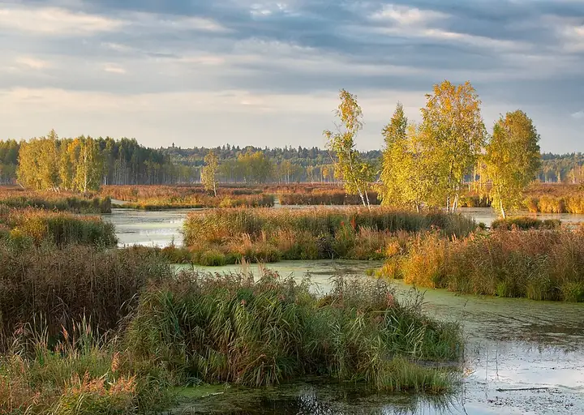
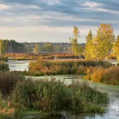

Фото: Nikiforovvb, CC BY-SA 4.0 · Wikimedia Commons
Национальный парк · ВАО
Лосиный остров
Настоящий лес в городе: экотропы, лосиная биостанция и велодорожки.
- ₽ · до 1 500 ₽ на человека
- в 1 плане
Позвать сюда: Лосиный островОткрыть в каталоге: Лосиный островМаршрут до места: Лосиный остров
Адрес и детали
- Адрес
- Поперечный просек, 1Г
Открыть на Яндекс Картах (в новой вкладке) - Метро
- м. Сокольники
- Округ
- Восток (ВАО)
- Цена
- до 1 500 ₽ на человека
- Проверено
- работает — проверили в октябре 2026
Планы с этим местом 1

- Лосиный остров · Национальный парк · м. Сокольники
Велодорожки и экотропы через настоящий осенний лес. Можно доехать до лосиной биостанции.
Открыть план: Велик по Лосиному островуПозвать сюда: Велик по Лосиному острову
Фото: Nikiforovvb, CC BY-SA 4.0 · Wikimedia Commons
Похожие рядом


Что ещё рядом
Как позвать
- Выбери план, место или событие — в карточке адрес, цены и маршрут в Яндекс Картах.
- Нажми «Позвать сюда» — соберётся приглашение-игра для свидания или голосование для компании.
- Отправь ссылку в любой мессенджер: тебе ответят, а компания отметит, куда и когда может. Бесплатно и без регистрации.